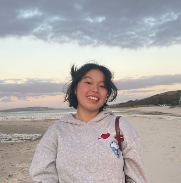

Team Profile
Team Name: THUR Assignment 2 Group #25
Personal Information
Team Member: Chalani
Team Member: Samantha

Team Member: Liam
Team Member: Hayden
Team Member: Alexander
Team Member: Matthew
My full name is Chalani Malindra Paranavithanage, I am currently a student at Royal Melbourne Institute of Technology University (RMIT University). My student ID is: s3953977 and I am enrolled in Bachelor of Information and Technology. I am part of the THUR Assignment 2 Group #25. I was born in Sri Lanka, grew up in Italy and recently migrated to Australia. I am fluent in 4 different languages, and they are Sinhala, English, Italian and Spanish. I practice swimming and tennis whenever I get some free time to reset myself. My interest in IT started by watching my uncle working as an IT Engineer and the way how Information Technology is used to fix most of the issues we encounter in day to day life. My experience in IT is limited to basic to intermediate level. However, I have completed and obtained the European Computer Driver’s Licence certificate from AICA in Italy.
Assignment 1 - GitHub Repo URL: https://github.com/chalanigithub/My-Profile-Repo.git
Assignment 1 - GitHub Pages URL: https://chalanigithub.github.io/My-Profile-Repo/
Hi! My name is Samantha Sedjunggo and I am currently a student (3942916) at the Royal Melbourne Institute of Technology (RMIT). My ethnicity is Chinese Indonesian and I can speak Indonesian, Japanese and English. I graduated high school from Our Lady of Mercy College from 2016-2021 and I am currently studying a Bachelor of Information Technology at RMIT. I have a passion for music as I have been playing piano since the age of 3 due to my strict stereotypical asian parents. This love for music has also grown towards a love for film as I fell in love with their scores and soundtracks and then it grew to an overall love for the experience that films create. While l have no previous experience in the field of I.T, through studying I currently have an interest in cyber security.
Assignment 1 - GitHub Repo URL: https://github.com/sammsed/Assignment-1
Assignment 1 - GitHub Pages URL: https://sammsed.github.io/Assignment-1/
Hi, my full name is Liam Thomas Bentley (s3928558). I am a part of THUR Assignment 2 Group #25. Born in Shepparton, raised in Bendigo, I moved from Bendigo to Melbourne to study a Bachelor of Information Technology at RMIT as a mature age student. I previously studied a Bachelor of Commerce at Deakin University, with a particular focus on contractual law, though I did not proceed with my second year of the course due to a change in career direction. In my personal time I play in amateur esports tournaments with friends for competitive first-person shooter games, such as Rainbow Six Siege and Counter Strike: Global Offensive. If I am not spending time with friends, working, studying, or gaming, then I am usually at the gym or walking my golden retriever, Henry. My experience with IT is limited to home done PC builds and some basic experience with some commercial electrical networking and setup, it is my goal to expand on my current knowledge and experience over the extent of my course at RMIT. My current interest lies in the fields of cyber security, as well as web development.
Assignment 1 - GitHub Repo URL: https://github.com/ltbentley/COSC1078-IIT-A1
Assignment 1 - GitHub Pages URL: https://ltbentley.github.io/COSC1078-IIT-A1/
Hi I’m Hayden! (s3948965). I am currently studying a Bachelor of Information Technology at RMIT. Some quick facts about me.. my birthday is the 22nd of February and my background is Timorese. My parents come from a small country called East Timor located near Indonesia. In my family of 6, it consists of myself, mother and father and finally my 3 older brothers with me being the youngest of them all. In my free time, i mostly love playing PC games, FPS and mobas while watching anime on occassion. My IT Interest lies within IT hardware such as computer parts and pc building which i hopes to eventually build upon during studies at RMIT. Despite my strong interest in IT, I haven't been able to have any proper IT experience as of yet so i could really say that i’m beginner level with my only experience being using a computer. But I'm continually seeking to gain and learn more about what the IT world offers.
Assignment 1 - GitHub Repo URL: https://github.com/puhayden/IT-Assignment
Assignment 1 - GitHub Pages URL: https://puhayden.github.io/IT-Assignment/
Hello! I’m Alexander (s3951539) and I am a current student of RMIT. I had previously transferred from Swinburne University after a very long string of issues stemming back from 2016 when I began the degree. I am Italian Australian, both parents are Italian - however I was born here. My hobbies outside of Tech are Astrology, looking at it more as a whole rather than just horoscopes - keeping in mind correlation doesn’t mean causation, working with video - I have not done any projects as such - but doing post-production of videos using Final Cut Pro X and watching an endless amount tv, notably watching 24 seasons of the simpsons in 3 weeks. I also would deem myself a casual gamer between PS5, Switch and PC - currently playing through Bayonetta on Switch and Trying to get into Elden Ring on PS5. My interest in IT started from as young as i can remember, but it has still remained strong to this day as I do like the problem solving aspect of the tech industry, i do regularly do small repairs for those people who i do know - but also in maintaining said solutions, such as small networking solutions i have implemented in said peoples houses also. In saying I have done small repairs, as for formal experience - I have not held a job in the tech field, however I would be entirely open to it. I do hold a Certificate III from 2014 with Holmesglen done as part of my VCE, which would probably only require a certificate IV to keep me updated, and I have my Diploma from Swinburne which allowed me to proceed onto finishing my degree here at RMIT.
Assignment 1 - GitHub Repo URL: https://github.com/itsaleexp/COSC1078
Assignment 1 - GitHub Pages URL: https://itsaleexp.github.io/COSC1078/
XXXXXXXXXXXXXXXXXXXXXXXXXXX
Assignment 1 - GitHub Repo URL:
Assignment 1 - GitHub Pages URL:
Team Profile - 3 Test Outcome Comparison
Our team has 6 members in total, and they are Hayden, Alexander, Liam, Samantha, Matthew and Chalani. According to the personality tests carried out in Assignment 1, we have been able to gain some valuable insights of each member’s personality. For instance, according to the 3 tests, Chalani can be considered as an extraverted person who prefers to socialise with people while being open to new ideas. Also, her necessity to organise tasks in advance with highest standards is one of the key features which is essential to this project. Hayden, on the other hand is considered to be an introvert who loves to observe things without hurrying into conclusions. This type of personality would clearly help our team to identify important details that otherwise would go unnoticed. Alexander’s personality tests reflect that he has a combination of introvert, observant thinker and prospecting type of personality. It means that he tends to have a varying approach towards tasks as needed. Furthermore, Liam’s results clearly highlight his extrovert and socialising personality along with his openness to new ideas and the ability to coordinate tasks. Similarly, Samantha also has an extrovert personality open to new ideas and the passion to work together with team members to achieve project goals. Additionally, her test results show that she has an intuitive nature which can be an advantage when working on difficult project tasks. Finally, Matthew’s results indicate that he has an extraverted personality. It means that he enjoys having people around and to share ideas with them. In a group project environment, his personality of helping others when in need is one of the most important qualities according to the test results. Last but not least, the test outcomes highlight the fact that his nature of being an optimistic person would help himself and everyone around him to achieve great success. These identified characteristics of all group members covering a wide range of personalities will help us thrive through all challenges that we would face throughout this project work.